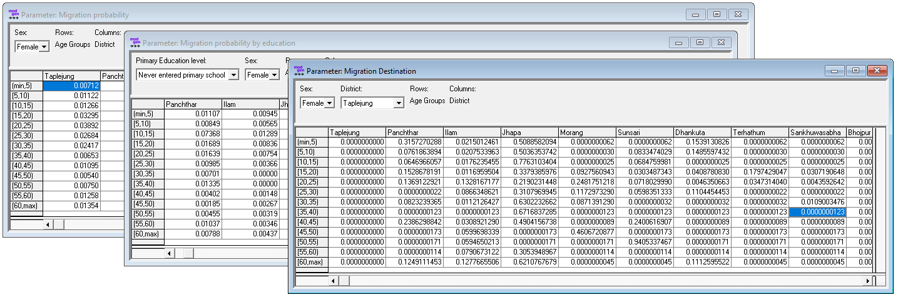

1.4. Script 4: Internal Migration¶
Internal Migration is modeled calculating origin-destination matrices by age group and sex. For easier parameterization, parameters are split up in probabilities to leave and the distributions of destination by origin. For the probability to leave, two alternative parameters are calculated, one including education as additional dimension.
1.4.1. File output¶
The code below generates 3 model parameters stored in a Modgen .dat file
- Migration probability by sex, age group and district
- Migration probability by eucation, sex, age group and district
- Migration Destination by origin, sex, and age group

1.4.2. Code¶
####################################################################################################
#
# DYNAMIS-POP Parameter Generation File 4 - Internal Migration
# This file is generic and works for all country contexts.
# Input file: globals_for_analysis.RData (To generate such a file run the setup script)
# Last Update: Martin Spielauer 2018-05-12
#
####################################################################################################
####################################################################################################
# Clear work space, load required packages and the input object file
####################################################################################################
rm(list=ls())
library(haven)
library(dplyr)
library(data.table)
library(sp)
library(maptools)
library(survival)
library(fmsb)
library(eha)
load(file="globals_for_analysis.RData")
dat <- g_residents_dat
# Set Parameter Output File
parafile <- file(g_para_migration, "w")
# Constants
n_maxdist <- max(dat$M_DOB)
# Add an integer variable for age a year ago
dat$m_ageago <- as.integer(dat$M_AGE)-1
# remove those not born a year ago
dat <- dat[!(dat$m_ageago<0),]
# Age groups 5 years ago, up to 60+
dat$m_agegr5 <- as.integer(dat$m_ageago/5) * 5
dat$m_agegr5[dat$m_agegr5>60] <- 60
# Remove those not in the country 12 months ago (previous district was max value of districts)
dat <- dat[dat$M_PDIST<n_maxdist,]
# Person is internal migrant (moved within the country)
dat$is_migrant <- FALSE
dat$is_migrant[dat$M_DOR != dat$M_PDIST] <- TRUE
# Keep only what's needed
dat <- dat[,c("M_WEIGHT", "M_MALE", "M_EDUC", "M_DOR", "M_PDIST", "m_agegr5", "is_migrant" )]
####################################################################################################
# Create and append a dataset of all possible migrations for each age group
# This is to avoid empty cells in origin-destination matrices
# The records have very low weights which do not affect overall migration
####################################################################################################
umale <- unique(dat$M_MALE)
udist <- sort(unique(dat$M_DOR))
uage <- sort(unique(dat$m_agegr5))
ueduc <- sort(unique(dat$M_EDUC))
allmigs <- expand.grid(M_MALE=umale, M_DOR=udist, M_PDIST=udist, m_agegr5=uage, M_EDUC=ueduc )
allmigs <- allmigs[allmigs$M_DOR != allmigs$M_PDIST,]
allmigs$M_WEIGHT <- 0.0000001
allmigs$is_migrant <- TRUE
dat <- rbind(dat, allmigs)
####################################################################################################
# Calculate the parameter MigrationProbability[SEX][AGE5_PART][DISTRICT_NAT]
####################################################################################################
# Create the parameter for probability of out-migration by sex, age group and province of origin
popall <- xtabs(dat$M_WEIGHT ~ dat$M_MALE + dat$m_agegr5 + dat$M_PDIST)
migs <- dat[dat$is_migrant==TRUE,]
popmig <- xtabs(migs$M_WEIGHT ~ migs$M_MALE + migs$m_agegr5 + migs$M_PDIST)
propmig <- as.data.frame(popmig/popall)
propmig <- propmig[order(propmig$migs.M_MALE, propmig$migs.m_agegr5, propmig$migs.M_PDIST),]
####################################################################################################
# Write the parameter MigrationProbability[SEX][AGE5_PART][DISTRICT_NAT]
####################################################################################################
cat("parameters { \n //EN Migration probability \ndouble MigrationProbability[SEX][AGE5_PART][DISTRICT_NAT] = {\n", file=parafile)
cat(format(round(propmig$Freq,5),scientific=FALSE), file=parafile, sep=", ", append=TRUE)
cat("\n}; \n\n", file=parafile, append=TRUE)
####################################################################################################
# Calculate the parameter MigrationProbabilityEduc[PRIMARY_LEVEL][SEX][AGE5_PART][DISTRICT_NAT]
####################################################################################################
popall <- xtabs(dat$M_WEIGHT ~ dat$M_MALE + dat$m_agegr5 + dat$M_PDIST + dat$M_EDUC)
migs <- dat[dat$is_migrant==TRUE,]
popmig <- xtabs(migs$M_WEIGHT ~ migs$M_MALE + migs$m_agegr5 + migs$M_PDIST + migs$M_EDUC)
propmigE <- as.data.frame(popmig/popall)
# for those below age 10 use the overall rates from above
propmigE <- propmigE[propmigE$migs.m_agegr5 != "0" & propmigE$migs.m_agegr5 != "5",]
propmigN <- propmig[propmig$migs.m_agegr5 == "0" | propmig$migs.m_agegr5 == "5",]
propmigN1 <- cbind(migs.M_EDUC ="0",propmigN)
propmigN2 <- cbind(migs.M_EDUC ="1",propmigN)
propmigN3 <- cbind(migs.M_EDUC ="2",propmigN)
propmigN <- rbind(propmigN1, propmigN2, propmigN3)
propmig <- rbind(propmigE, propmigN)
propmig <- propmig[order(propmig$migs.M_EDUC, propmig$migs.M_MALE, propmig$migs.m_agegr5, propmig$migs.M_PDIST),]
####################################################################################################
# Write the parameter MigrationProbabilityEduc[PRIMARY_LEVEL][SEX][AGE5_PART][DISTRICT_NAT]
####################################################################################################
cat("\n\n//EN Migration probability by Education\ndouble MigrationProbabilityEduc[PRIMARY_LEVEL][SEX][AGE5_PART][DISTRICT_NAT] = {\n", file=parafile, append=TRUE)
cat(format(round(propmig$Freq,5),scientific=FALSE), file=parafile, sep=", ", append=TRUE)
cat("\n}; \n\n", file=parafile, append=TRUE)
####################################################################################################
# Calculate the parameter cumrate MigrationDestination[SEX][DISTRICT_NAT][AGE5_PART][DISTRICT_NAT]
####################################################################################################
popmig <- dat[dat$is_migrant==TRUE,]
popmig <- xtabs(popmig$M_WEIGHT ~ popmig$M_MALE + popmig$m_agegr5 + popmig$M_PDIST + popmig$M_DOR)
popmig <- as.data.frame(popmig)
popmig$groupsum <- ave(popmig$Freq, popmig$popmig.M_MALE, popmig$popmig.m_agegr5, popmig$popmig.M_PDIST,FUN=sum)
popmig$paravalue <- popmig$Freq / popmig$groupsum
popmig <- popmig[order(popmig$popmig.M_MALE, popmig$popmig.M_PDIST, popmig$popmig.m_agegr5),]
####################################################################################################
# Write the parameter MigrationDestination[SEX][DISTRICT_NAT][AGE5_PART][DISTRICT_NAT]
####################################################################################################
cat("\n\n//EN Migration Destination\ncumrate MigrationDestination[SEX][DISTRICT_NAT][AGE5_PART][DISTRICT_NAT] = {\n", file=parafile, append=TRUE)
cat(format(round(popmig$paravalue,10),scientific=FALSE), file=parafile, sep=", ", append=TRUE)
cat("\n}; \n};\n", file=parafile, append=TRUE)
close(parafile)